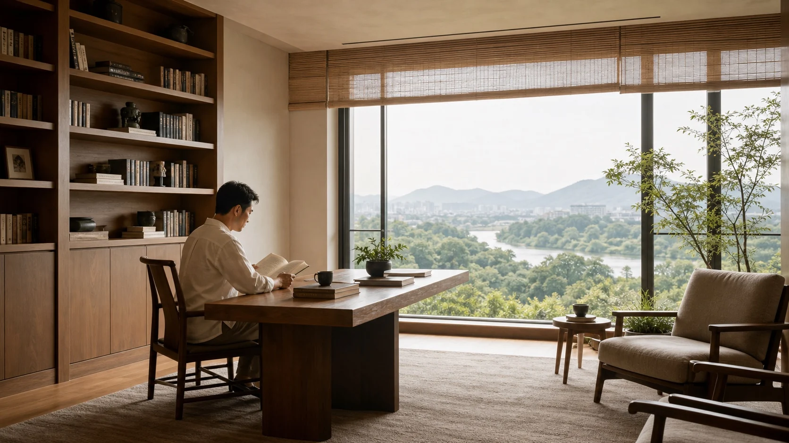
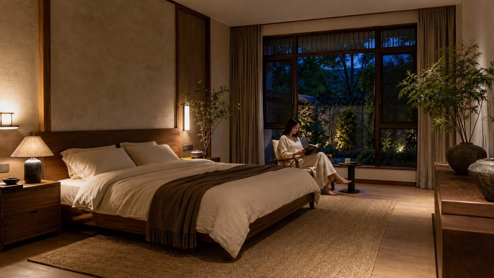
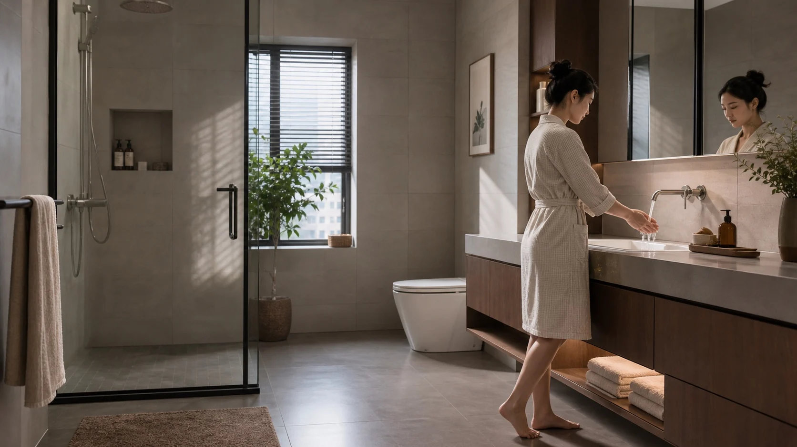
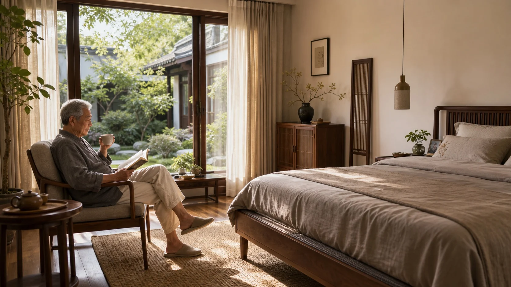
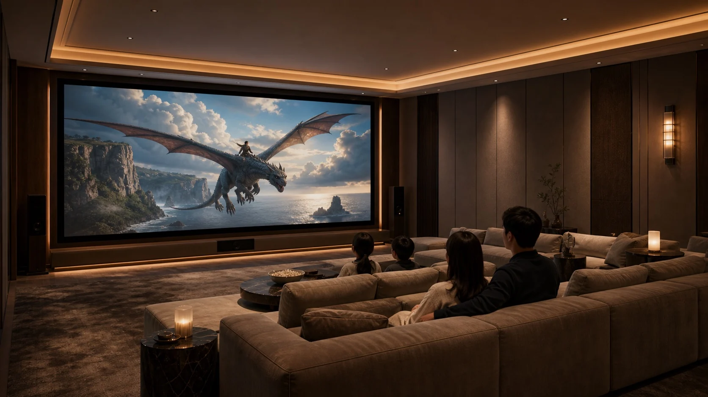

强调统一空气处理能力
优势通常在新风、过滤、除湿与集中控制整合度，但如果气流组织、噪声和分区策略处理不好，也可能出现风感、能耗和体验落差。

Five-Constant System Column
对长沙的高端住宅来说，真正成立的 DOAS 五恒系统，不是一个营销口号，也不是某一种末端形式，而是一套基于气候、热湿、空气与长期居住节律建立起来的住宅系统逻辑。
现在市场上谈五恒的人很多，全空气、顶辐射、地辐射、无风空调、静音空调、被动房、超低能耗，各有各的说法。但如果底层逻辑没有讲清楚，客户最后得到的往往只是名词更多、判断更难。我们希望把这件事重新讲回本质: 什么才是真正健康、舒适、稳定的住宅环境，以及在长沙这种湿热与湿冷都很鲜明的城市里，五恒到底应该怎样实现。
我们理解的五恒，是住宅结果，不是设备立场。
Why This Page Exists
它更像一篇可直接发给客户的住宅系统说明，帮助客户在对比不同流派之前，先建立正确判断标准。
我们不会先用设备名词压人，而是先把热舒适、湿度、洁净度、新风与安静的关系讲明白。
我们会直接说明市场上的常见误区，也会清楚表达泽丰在长沙住宅五恒上的独立立场。
Living Atmosphere

Market Landscape
因为很多讨论停留在“我是哪个流派”，而不是“你最后住出来是什么结果”。全空气、顶辐射、地辐射、无风空调、静音空调，这些更多是在讲系统组织方式或设备表达方式，但它们并不天然等于更健康、更舒适，也不自动适合长沙。
优势通常在新风、过滤、除湿与集中控制整合度，但如果气流组织、噪声和分区策略处理不好，也可能出现风感、能耗和体验落差。
顶辐射、地辐射都能改善体感，但如果没有稳定的新风与除湿逻辑，在长沙的梅雨季、高露点季节里，舒适和结露风险会直接碰撞。
这些名称抓住的是客户感受，但常常省略了背后的湿度控制、空气品质和全年工况逻辑，容易让讨论停留在表面印象。
先不要急着站队。先把“长沙住宅真正需要解决什么”讲清楚，再决定系统形式，才不会被名词牵着走。
Comfort Logic
真正高等级的人居环境，从来都不是只看空调出风口。国际上关于健康建筑与热舒适的讨论，长期都围绕几件事展开: 热感觉是否稳定、湿度是否被控制、空气是否新鲜洁净、噪声是否足够低、气流是否让人放松而不是被打扰。
Fanger 的 PMV/PPD 理论、ASHRAE 55 等热舒适标准，关心的都不是“冷不冷”这么简单，而是温度、平均辐射温度、气流、湿度、着装和代谢共同作用下，人是否愿意久待。
返潮、闷、黏、异味、材料受潮、表面结露、地下室发霉感，这些都和水汽管理直接相关。湿度失控时，温度再好，体感也不会高级。
WELL、WHO 等体系持续强调颗粒物、通风、新鲜空气和污染控制的重要性。住宅里真正被感知到的，是清爽、无异味、久待不闷，而不是某个设备名称。
客户最终记住的，通常不是机组型号，而是夜里是否安静、沙发旁有没有风、卧室里呼吸时有没有持续的设备存在感。
Changsha Climate
长沙并不是只热，或者只冷。它同时有夏季高温高湿、梅雨返潮、冬季湿冷、过渡季节通风不稳定、地下空间易受潮等一整套复合问题。也正因为这样，单纯追求“低温”“无风”或者“极低能耗”的单点目标，并不能自动等于真正舒适。
真正的难点是高含湿量和高露点。只有把显热和潜热分开处理，体感才会从“凉但黏”变成真正干爽。
外界空气本身就湿，盲目加大通风量会把更多水汽带进来。新风一定要带着除湿逻辑进入系统。
长沙冬天常见的是湿冷和阴冷，不是典型北方的干冷。舒适感建立在热环境稳定和表面温度管理上，而不是把某个送风温度做得更猛。


Our Position
这不是为了追一个术语，而是因为长沙住宅的真实问题决定了系统必须先把空气中的水汽负担处理好，再去做空间热环境、气流和声环境的细化控制。只有显热与潜热被拆开思考，很多客户常年感受到的黏、闷、返潮、冷表面和隐形不舒适，才有机会被真正解决。
“一定不能有风盘”“一定要做被动房”“一定追求极低能耗”这些口号，在长沙高端住宅里都需要回到具体项目、具体围护结构、具体使用习惯里重新判断。
系统形式可以因建筑条件而不同，但舒适逻辑不能含糊。我们更看重的是全年工况是否闭环，而不是展示时某个概念是否更容易被记住。
System Strategy
别墅与大平层的空间差异、朝向差异、地下空间属性、家庭成员习惯都不同。我们更倾向于用一条清晰的空气与湿度主线，把不同空间真正适合的末端方式组织起来，而不是为了概念统一，硬把所有问题塞进一种设备表达。
负责新风、过滤、潜热处理和空气品质主线，把长沙最难缠的湿度问题先抓住。
不同空间对风感、响应速度、静音和表面舒适的要求不同，多末端是为了适配生活，不是为了做复杂。
我们不会为了好听就默认采用。装修协同、结露风险、维护边界和项目落地能力，都会进入判断。
Five Outcomes
重点不是极低温度，而是客厅、卧室、过道、地下室都能维持一个人愿意久留的热环境。
这决定了体感是否干爽，也决定了返潮、异味、材料受潮和结露风险是否被压下去。
不是简单把室外空气送进来，而是让家庭成员长时间处在不闷、不滞、呼吸放松的状态。
对高端住宅来说，洁净感并不是“闻不到什么”，而是生活场景里始终有一种干净、明快、无压的空气背景。
夜间卧室、清晨起居、书房工作、老人休息、孩子睡眠，这些场景都要求系统低噪、低风感、低存在感。
Implementation Path
建筑朝向、围护结构、地下空间、采光通风条件、家庭成员和居住习惯，决定系统起点。
不是只看设计日温度，而要看梅雨、高湿、高露点、冬季湿冷和过渡季通风边界。
温湿去耦以后，温度控制不再被湿度问题拖累，室内体感会从“能用”进入“高级”。
新风量、过滤等级、换气路径和空间压力关系，需要一起考虑，不能靠单点设备补救。
高端住宅的舒适，不是装完当天，而是住进去几年后依然稳定、安静、容易维护。
设备是为系统服务的，不是反过来决定逻辑。我们更关注整套系统最后能不能被真实居住验证。


